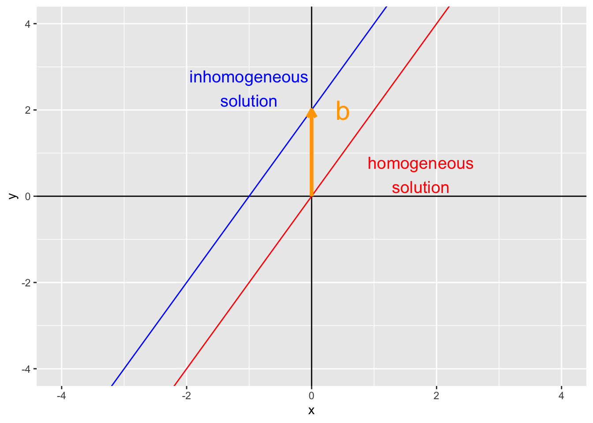
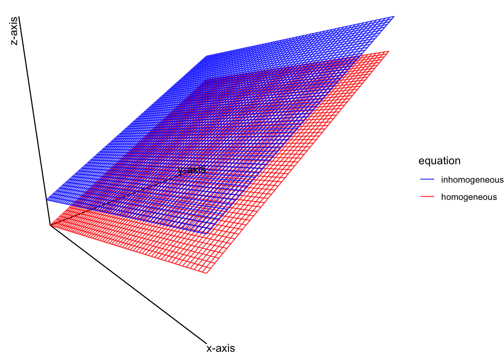

Chapter 4 Matrix equations
Here we introduce the concept of the linear equation \(\mathbf{A} \mathbf{x} = \mathbf{b}\). This equation is the most fundamental equation in all of statistics and data science. Given a matrix \(\mathbf{A}\) and a vector of constants \(\mathbf{b}\), the goal is to solve for the value (or values) of \(\mathbf{x}\) that are a solution to this equation. The equation \(\mathbf{A} \mathbf{x} = \mathbf{b}\) is a matrix representation of the system of linear equations
\[ \begin{align*} \tag{4.1} \mathbf{A} \mathbf{x} & = \mathbf{b} \\ \begin{pmatrix} \mathbf{a}_1 & \ldots & \mathbf{a}_K \end{pmatrix} \begin{pmatrix} x_1 \\ \vdots \\ x_K \end{pmatrix} & = \mathbf{b} \\ x_1 \mathbf{a}_1 + \ldots + x_K \mathbf{a}_K & = \mathbf{b} \\ \end{align*} \]
as long as the matrix \(\mathbf{A}\) has \(n\) rows and \(K\) columns and the vectors \(\mathbf{a}_k\) are \(n\)-dimensional.
Example: in class
Example: in class
4.1 Solutions of matrix equations
Because the matrix equation \(\mathbf{A} \mathbf{x} = \mathbf{b}\) is equivalent to a linear system of equations \(x_1 \mathbf{a}_1 + \ldots + x_K \mathbf{a}_K = \mathbf{b}\), we can solve the matrix equation \(\mathbf{A} \mathbf{x} = \mathbf{b}\) by writing the equation in an augmented matrix form \[ \begin{align*} \begin{pmatrix} \mathbf{a}_1 & \ldots & \mathbf{a}_K & \mathbf{b} \end{pmatrix} \end{align*} \] and then reducing the matrix to reduced row echelon form. This gives rise to the theorem
4.2 Existence of solutions
A solution to the matrix equation \(\mathbf{A} \mathbf{x} = \mathbf{b}\) exists if and only if \(\mathbf{b}\) is a linear combination of the columns of \(\mathbf{A}\). In other words, \(\mathbf{A} \mathbf{x} = \mathbf{b}\) has a solution if and only if \(\mathbf{b}\) is in the \(\mbox{span}\{\mathbf{a}_1, \ldots, \mathbf{a}_K\}\).
- Example: in class Let \(\mathbf{A} =\ldots\) and \(\mathbf{b} = \ldots\). Is the matrix equation \(\mathbf{A} \mathbf{x} = \mathbf{b}\) consistent?
Theorem 4.2 For the \(n \times K\) matrix \(\mathbf{A}\), the following statements are equivalent:
For each \(\mathbf{b} \in \mathcal{R}^K\), the equation \(\mathbf{A} \mathbf{x} = \mathbf{b}\) has at least one solution
Each \(\mathbf{b} \in \mathcal{R}^K\) is a linear combination of the columns of \(\mathbf{A}\)
The columns of \(\mathbf{A}\) span \(\mathcal{R}^K\)
\(\mathbf{A}\) has a pivot in every row
4.3 Matrix-vector multiplication
To calculate \(\mathbf{A} \mathbf{x}\), we need to define matrix multiplication. The equivalence between the linear systems of equations \(x_1 \mathbf{a}_1 + \ldots + x_K \mathbf{a}_K = \mathbf{b}\) and the matrix equation \(\mathbf{A} \mathbf{x}\) gives a hint in how to do this. First, recall the definition of \(\mathbf{A}\) and \(\mathbf{x}\)
\[ \begin{align*} \mathbf{A} = \begin{pmatrix} a_{11} & a_{12} & \ldots & a_{1K} \\ a_{21} & a_{22} & \ldots & a_{2K} \\ \vdots & \vdots & \ddots & \vdots \\ a_{n1} & a_{n2} & \ldots & a_{nK} \\ \end{pmatrix} && \mathbf{x} = \begin{pmatrix} x_1 \\ x_2 \\ \vdots \\ x_n \end{pmatrix} \end{align*} \] The matrix product \(\mathbf{A}\mathbf{x}\) is the linear system of equations \[ \begin{align*} \mathbf{A} \mathbf{x} & = \begin{pmatrix} a_{11} & a_{12} & \ldots & a_{1K} \\ a_{21} & a_{22} & \ldots & a_{2K} \\ \vdots & \vdots & \ddots & \vdots \\ a_{n1} & a_{n2} & \ldots & a_{nK} \\ \end{pmatrix} \begin{pmatrix} x_1 \\ x_2 \\ \vdots \\ x_n \end{pmatrix} \\ & = x_1\begin{pmatrix} a_{11} \\ a_{21} \\ \vdots \\ a_{n1} \end{pmatrix} + x_2 \begin{pmatrix} a_{12} \\ a_{22} \\ \vdots \\ a_{n2} \end{pmatrix} + \cdots + x_K \begin{pmatrix} a_{1K} \\ a_{nK} \\ \vdots \\ a_{nK} \end{pmatrix} \\ & = \begin{pmatrix} a_{11} x_1 + a_{12} x_2 + \ldots + a_{1K} x_K \\ a_{21} x_1 + a_{22} x_2 + \ldots + a_{2K} x_K \\ \vdots \\ a_{n1} x_1 + a_{n2} x_2 + \ldots + a_{nK} x_K \\ \end{pmatrix} \end{align*} \] Notice that the first row of the last matrix above has the sum first row of the matrix \(\mathbf{A}\) multiplied by the corresponding elements in \(\mathbf{x}\) (i.e., first element \(a_{11}\) of the first row of \(\mathbf{A}\) times the first element \(x_1\) of \(\mathbf{x}\) plus the second, third, fourth, etc.). Likewise, this pattern holds for the second row, and all the other rows. This gives an algorithm for evaluating the product \(\mathbf{A} \mathbf{x}\).
Example: in class
Example: in class
Example: in R using loops
Example: in R using
%*%
4.4 Properties of matrix-vector multiplication
If \(\mathbf{A}\) is a \(n \times K\) matrix, \(\mathbf{u}\) and \(\mathbf{v}\) are vectors in \(\mathcal{R}^K\) and \(c\) is a scalar, then
- \(\mathbf{A} (\mathbf{u} + \mathbf{v}) = \mathbf{A} \mathbf{u} + \mathbf{A} \mathbf{v}\)
- \(\mathbf{A} (c \mathbf{u}) = (c \mathbf{A}) \mathbf{u}\)
- Proof in class
4.5 Solutions of linear systems
4.5.1 Homogeneous linear systems of equations
The homogeneous linear system of equations can be written in augmented matrix form \[ \begin{align*} \begin{pmatrix} \mathbf{a}_1 & \ldots & \mathbf{a}_K & \mathbf{0} \end{pmatrix} \end{align*} \] which implies that a non-trivial solution only exists if there is a free variable. Another way of saying this is that at least one column must not be a pivot column. If every column were a pivot column, the reduced row echelon form of the augmented matrix would be \[ \begin{align*} \begin{pmatrix} 1 & 0 & \ldots & 0 & 0 \\ 0 & 1 & \ldots & 0 & 0 \\ 0 & 0 & \ldots & 1 & 0 \end{pmatrix} \end{align*} \] which implies the only solution is the trivial solution \(\mathbf{0}\).
- Example: in class
\[ \begin{align*} 3 x_1 - 2 x_2 + 4 x_3 = 0 \\ - 2 x_1 + 4 x_2 - 2 x_3 = 0 \\ 5 x_1 - 6 x_2 + 6 x_3 = 0 \end{align*} \] * Example: in class
Consider the equation
\[ \begin{align*} 2x_1 + 4 x_2 - x_3 = 0. \end{align*} \] we can write this as \[ \begin{align*} x_1 = -2 x_2 + \frac{1}{2} x_3 \end{align*} \] where \(x_2\) and \(x_3\) are free variables. Writing this as a solution \(\mathbf{x}\) gives \[ \begin{align*} \mathbf{x} = \begin{pmatrix} x_1 \\ x_2 \\ x_3 \end{pmatrix} = \begin{pmatrix} -2 x_2 + \frac{1}{2} x_3 \\ x_2 \\ x_3 \end{pmatrix} = x_2 \begin{pmatrix} -2 \\ 1 \\ 0 \end{pmatrix} + x_3 \begin{pmatrix} \frac{1}{2} \\ 0 \\ 1 \end{pmatrix} \end{align*} \] which is a linear combination of the vectors \(\mathbf{u} = \begin{pmatrix} -2 \\ 1 \\ 0 \end{pmatrix}\) and \(\mathbf{v} = \begin{pmatrix} \frac{1}{2} \\ 0 \\ 1 \end{pmatrix}\). This implies that we can write the solution \(\mathbf{x} = c \mathbf{u} + d \mathbf{v}\) for scalars \(a\) and \(b\). Therefore, the solution set \(\mathbf{x}\) is contained in the \(\mbox{span}\{\mathbf{u}, \mathbf{v}\}\). Because the vectors \(\mathbf{u}\) and \(\mathbf{v}\) are linearly independent (they don’t point in the same direction), the set of all linear combinations of \(c \mathbf{u} + d \mathbf{v}\) defines a plane.
4.6 Solutions to nonhomogeneous systems
Recall the simple linear equation \[ y = mx + b \] where \(m\) is the slope and \(b\) is the y-intercept. Setting \(b = 0\) gives a simple homogenous linear equation where the y-intercept goes through the origin (0, 0). When \(b\) is nonzero, the line keeps the same slope but is shifted upward/downward by \(b\).
ggplot(data = data.frame(x = 0, y = 0), aes(x, y)) +
geom_vline(xintercept = 0) +
geom_hline(yintercept = 0) +
geom_abline(slope = 2, intercept = 0, color = "red") +
geom_abline(slope = 2, intercept = 2, color = "blue") +
coord_cartesian(xlim = c(-4, 4), ylim = c(-4, 4)) +
geom_text(
data = data.frame(x = c(0, 0), y = c(0, 2), text = c("homogeneous\nsolution", "inhomogeneous\nsolution")),
aes(x = x + c(1.75, -1), y = y + 0.5, label = text), size = 5, inherit.aes = FALSE,
color = c("red", "blue")) +
geom_segment(
aes(x = 0, xend = 0, y = 0, yend = 2),
arrow = arrow(length = unit(0.1, "inches")),
size = 1.5, color = "orange") +
geom_text(
data = data.frame(x = 0, y = 2, text = "b"),
aes(x = x + 0.5, y = y, label = text),
size = 8, inherit.aes = FALSE,
color = "orange") 
This shift in location (but not in slope) is called a translation
- Example: in class Let’s revisit the example from before
\[ \begin{align*} 3 x_1 - 2 x_2 + 4 x_3 = 0 \\ - 2 x_1 + 4 x_2 - 2 x_3 = 0 \\ 5 x_1 - 6 x_2 + 6 x_3 = 0 \end{align*} \] but change this so that \(\mathbf{b} = \begin{pmatrix} 4 \\ -2 \\ 1 \end{pmatrix}\)
Write this as a parametric solution with a mean shift
Example: Show this shift for a system of linear equations where the solution set defines a plane. From example above, \[ \begin{align*} 2x_1 + 4 x_2 - x_3 = 0. \end{align*} \] has the parametric solution \(\mathbf{x} = c \mathbf{u} + d \mathbf{v}\) with \[ \begin{align*} \mathbf{u} & = \begin{pmatrix} -2 \\ 1 \\ 0 \end{pmatrix} + \mathbf{v} & = \begin{pmatrix} \frac{1}{2} \\ 0 \\ 1 \end{pmatrix} \end{align*} \]
Now, if we change the system of linear equations so that we have the inhomogeneous equation \[ \begin{align*} 2x_1 + 4 x_2 - x_3 = 20. \end{align*} \] we get the homogeneous solution set \(x_1 = -2 x_2 + \frac{1}{2} x_3 + 4\) which can be written in parametric form as \(\mathbf{x} = c \mathbf{u} + d \mathbf{v} + \mathbf{p}\)$ with \[ \begin{align*} \mathbf{u} & = \begin{pmatrix} -2 \\ 1 \\ 0 \end{pmatrix} + \mathbf{v} & = \begin{pmatrix} \frac{1}{2} \\ 0 \\ 1 \end{pmatrix} \\ \mathbf{p} & = \begin{pmatrix} 20 \\ 0 \\ 0 \end{pmatrix} \end{align*} \]
## [,1] [,2] [,3] [,4]
## [1,] 1 0 1.50 -0.50
## [2,] 0 1 0.25 -1.75
## [3,] 0 0 0.00 0.00\[ \begin{align*} x_1 = \frac{3}{2} x_2 - \frac{1}{2}\\ x_2 = \frac{1}{4} x_3 - \frac{7}{4} \\ \end{align*} \] which was the same solution set as the homoegenous solution plus the additional vector \(\begin{pmatrix} 20 \\ 0 \\ 0 \end{pmatrix}\). Thus, the inhomogenous solution is now \(\mathbf{x} = c \mathbf{u} + d \mathbf{v} + \mathbf{p}\) where \(\mathbf{u} = \begin{pmatrix} -2 \\ 1 \\ 0 \end{pmatrix}\), \(\mathbf{v} = \begin{pmatrix} \frac{1}{2} \\ 0 \\ 1 \end{pmatrix}\), and \(\mathbf{p} = \begin{pmatrix} 20\\ 0 \\ 0 \end{pmatrix}\).
For plotting, we will solve these equations for \(x_3\). Thus, the homogeneous equation has the solution \(x_3 = 2x_1 + 4x_2\) and the inhomogenous equation has the solution \(x_3 = 2x_1 + 4x_2 - 20\).
# uses gg3D library
n <- 60
x1 <- x2 <- seq(-10, 10, length = n)
region <- expand.grid(x1 = x1, x2 = x2)
df <- data.frame(
x1 = region$x1,
x2 = region$x2,
x3 = c(
2 * region$x1 + 4 * region$x2,
2 * region$x1 + 4 * region$x2 - 20),
equation = rep(c("inhomogeneous", "homogeneous"), each = n^2))
# theta and phi set up the "perspective/viewing angle" of the 3D plot
theta <- 45
phi <- 20
ggplot(df, aes(x = x1, y = x2, z = x3, color = equation)) +
axes_3D(theta = theta, phi = phi) +
stat_wireframe(
alpha = 0.75,
theta = theta, phi = phi) +
scale_color_manual(values = c("inhomogeneous" = "blue", "homogeneous" = "red")) +
theme_void() +
theme(legend.position = "none") +
labs_3D(hjust=c(0,1,1), vjust=c(1, 1, -0.2),
angle=c(0, 0, 90), theta = theta, phi = phi) ## Warning: Removed 4 row(s) containing missing values (geom_path).
4.7 Finding solutions
The following algorithm describes how to solve a linear system of equations. 1) Put the system of equations in an augmented matrix form 2) Reduce the augmented matrix to reduced row echelon form 3) Express each determined variable as a function of the free variables. 4) Write the solution in a general form where the determined variables are a function of the independent variables 5) Decompose the solution \(\mathbf{x}\) into a linear combination of free variables as parameters